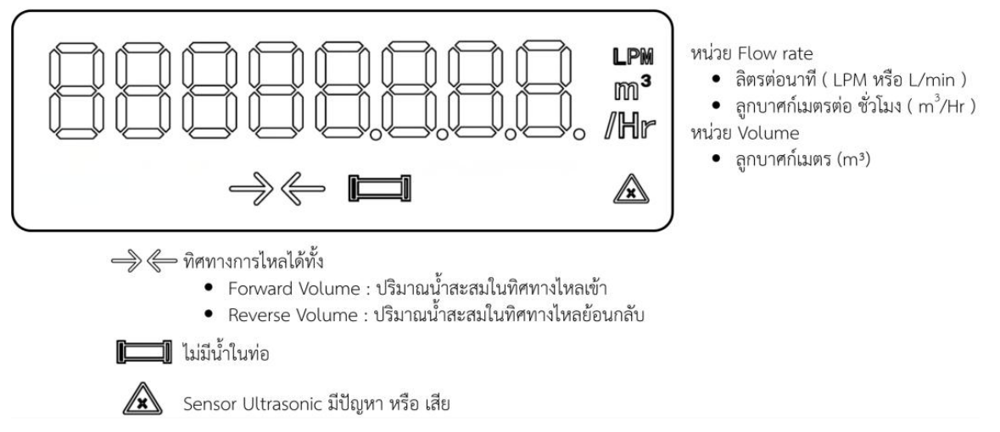

Ultrasonic Flow Transmitter for Water
ข้อมูลออกแบบเบื้องต้นและตัวเลือกในแบบฟอร์ม
F-RD-01 ภาคผนวกหน้า 5 ระบุ 220 VAC ±15% 50/60 Hz และ 24 VAC/VDC ±15% เป็นตัวเลือกของซีรีส์; ต้องแยก variant และตรวจ schematic ก่อนเลือกจริง
TVS / MOV / Fuse: รุ่น อัตราทน และตำแหน่งติดตั้งรอยืนยัน — ตัวอย่าง Part No. ในแบบฟอร์มไม่ใช่ BOM ที่อนุมัติ
4–20 mA, RS-485 Modbus RTU, Pulse สำหรับ Volume (Forward / Reverse) ตาม F-RD-01 หน้า 5
Digital Output protection, termination/bias, รุ่น Hardware และทางเลือกติดตั้งร่วมกัน: รอยืนยัน
1. User Experience Design / Sticker (Draft) — สติกเกอร์ จอ และปุ่ม
F-RD-01 หน้า 3 ระบุ Flow rate หน่วย LPM (L/min) หรือ m³/h, Volume หน่วย L หรือ m³, ปริมาตร Forward/Reverse และสัญลักษณ์ทิศทาง/สถานะเซนเซอร์ ภาพอ้างอิง LCD แสดง ตำแหน่ง segment ไม่ใช่คำยืนยันว่าทุกสัญลักษณ์ติดพร้อมกัน

| ส่วนติดต่อผู้ใช้ | แบบร่างที่ทราบ | ช่องรอยืนยัน |
|---|---|---|
| หน้าวัด | อัตราการไหล, ยอดสะสม Forward/Reverse | รูปแบบสลับหน้า ความละเอียด และสถานะผิดพลาด |
| การตั้งค่า | เลือก DN/หน่วย/เอาต์พุต ตามหัวข้อ 5 | จำนวนปุ่ม ชื่อปุ่ม ลำดับกด และ mockup จอแต่ละเมนู |
| Sticker | ระบุรุ่น WS-05 Series | กราฟิก สี โลโก้ ตำแหน่งไฟ/ปุ่ม และไฟล์อนุมัติ |
2. Function Design / Flow Chart — ผังการทำงาน
- จ่ายไฟ / โหลดค่าตั้ง
ตรวจรุ่น DN และ option - วัด Ultrasonic
Flow rate และทิศทาง - แสดง Flow / Volume
Forward และ Reverse - ส่งเอาต์พุต
4–20 mA / RS-485 / Pulse
ผังเชิงหน้าที่จาก F-RD-01 หน้า 3, 5; ลำดับภายในเฟิร์มแวร์และวงจร fault ยังไม่ยืนยัน ดู ผังประกอบเดิม
| รุ่นท่อ | ช่วง Flow rate (L/h) | ช่วง (m³/h) |
|---|---|---|
| DN15 | 10–3,130 | 0.01–3.13 |
| DN20 | 20–5,000 | 0.02–5.00 |
| DN25 | 30–7,880 | 0.03–7.88 |
F-RD-01 หน้า 3 และตารางหน้า 5; ไม่ใช่ช่วงตั้งค่า Scale/Transfer ที่อนุมัติ
3. Connection Terminal / Diagram — รูปแบบการต่อใช้งาน
| วงจร/ขั้วที่ต้องแสดงใน Diagram | หลักฐาน / สถานะ |
|---|---|
| Supply (AC หรือ AC/DC ตาม variant) | F-RD-01 หน้า 5; หมายเลขขั้ว L/N/+/− รอตรวจ schematic |
| Analog 4–20 mA | F-RD-01 หน้า 3, 5; polarity, active/passive, load รอยืนยัน |
| RS-485 A/B และ Pulse Forward/Reverse | F-RD-01 หน้า 5; pin map, common, รูปคลื่น/polarity รอยืนยัน |
แบบฟอร์มต้นทางมีคำแนะนำทั่วไปเรื่อง Supply terminal 1/2 และ RS-485 A/B สำหรับงานทดแทนรุ่นเดิม; ยังไม่มีหลักฐานว่า WS-05 ใช้ pinout เดียวกัน จึงไม่กำหนดหมายเลขขั้วโดยเดา
4. Box Size & Mounting — ขนาดกล่องและการติดตั้ง
| รายการ | ข้อมูลจาก F-RD-01 | สิ่งที่ต้องตรวจ |
|---|---|---|
| Nominal diameter | DN15 (½″), DN20 (¾″), DN25 (1″) | มาตรฐานเกลียวและแบบ Drawing ที่อนุมัติ |
| ความยาวตัวเรือนตามรุ่น | DN15 165 mm; DN20 190 mm; DN25 160 mm (หน้า 5–6) | มิติ L2/W/H และ tolerance ยังไม่ชัด |
| การป้องกัน / วัสดุ | IP65; ฝาครอบพลาสติก; coupling ทองเหลือง (หน้า 5) | ผลทดสอบ IP และชิ้นส่วนฉบับผลิตจริง |
5. Software (User Config) — เมนูตั้งค่า
F-RD-01 ระบุการเลือกหน่วย Flow/Volume และปริมาณต่อ Pulse; ตาราง SET0/SET1 ต่อไปนี้เป็น ร่างจากเอกสาร Design Guide เดิม ไม่ใช่ข้อกำหนดที่อนุมัติใน F-RD-01
| กลุ่ม | รายการในร่าง | สถานะ/ข้อจำกัด |
|---|---|---|
| SET0 · Transfer | Display Flow Unit, Display Volume Unit, SCALE Min/Max, Transfer Out Mode Inverte, Transfer Out Min/Max | ช่วงสัมพันธ์กับ DN; ค่าเริ่มต้น ความละเอียด และสมการจับคู่ 4–20 mA รอยืนยัน |
| SET1 · Option Modbus | Option Enable, address และ serial settings | ค่าจริง/ช่วงที่อนุมัติและ register map รอยืนยัน |
| SET1 · Option Pulse | Option Enable, Pulse Output (L/Pulse) | F-RD-01 กล่าวถึง m³/Pulse ด้วย; ความกว้างและขั้วพัลส์รอยืนยัน |
ผล: ☐ PASS ☐ REJECT
หมายเหตุ:
ผู้ตรวจ/ผู้อนุมัติ:
วันที่: